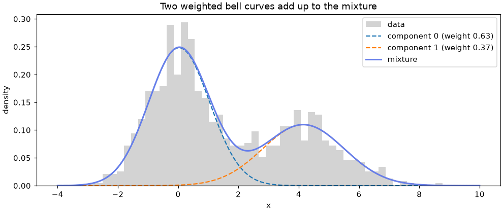
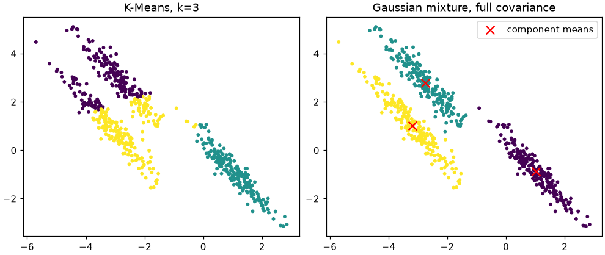
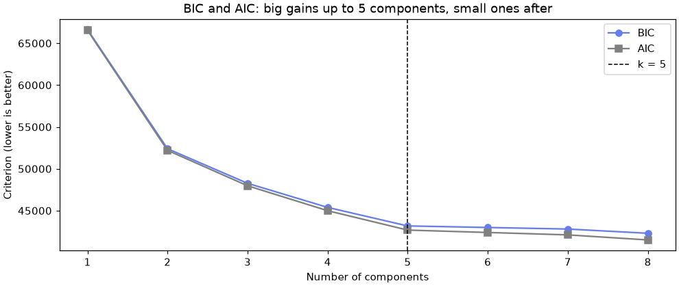

🔔 Lesson 8.5: Gaussian Mixture Models
Replace "this customer is in segment 3" with "this customer is 70% one kind and 30% another", and get a model of the whole data distribution in the bargain.
🎯 Learning Objectives
By the end of this lesson, you will be able to:
- Explain a Gaussian mixture as a weighted blend of bell-shaped components, fitted by the EM algorithm
- Fit
GaussianMixture, readmeans_,weights_andpredict_proba, and find the customers whose segment is uncertain - Choose a covariance type and explain why full or tied covariances can find stretched clusters that K-Means misses
- Use BIC and AIC to choose the number of components, and recognize when their answer needs judgment
- Use a fitted mixture as a density model: score how typical a point is, and generate synthetic samples
In This Lesson
🧭 A Blend of Bell Curves
K-Means gives every customer exactly one segment, even a customer who sits right on the line between two. The density methods of Lesson 8.4 added a third answer, "noise", but they are still all-or-nothing. Real customers are often in between: a regular who has started chasing discounts, or an occasional buyer who just made one large purchase. A Gaussian mixture model (GMM) describes that honestly, with a probability for each segment.
💡 Mental Model: Paint Mixed from a Few Base Colors
Imagine every customer's behavior is a dab of paint, and all the paint on the palette was mixed from a few base colors. A Gaussian mixture tries to work out the base colors (the components), how much of the palette each one supplied (the weights), and, for any dab, how likely it is to have come from each base color. A dab right next to a pure base color is almost certainly from it. A dab halfway between two colors gets a split answer, and that split is information, not indecision.
In the model, each component is a Gaussian (a bell curve, or in several dimensions a bell-shaped hill with elliptical contours), described by a center (means_), a spread and orientation (covariances_) and a share of the data (weights_). The model's picture of the data is the sum of these weighted hills.
🤔 Why This Matters
Probabilities change what you can do with segments. Marketing can send the Deal Hunter campaign only to customers who are at least 90% likely to be Deal Hunters, and route the borderline ones to a gentler message. The same fitted model also tells you how typical any customer is, which is the bridge to anomaly detection in Lesson 8.6.
📊 A Mixture in One Dimension
Start with something you can see in full: one feature, two hidden groups that overlap. Generate them so you know the true answer, then ask GaussianMixture to find it without being told which point came from which group.
import numpy as np
import pandas as pd
import matplotlib.pyplot as plt
from sklearn.mixture import GaussianMixture
rng = np.random.default_rng(42)
group_a = rng.normal(loc=0.0, scale=1.0, size=600)
group_b = rng.normal(loc=4.0, scale=1.5, size=400)
x = np.concatenate([group_a, group_b]).reshape(-1, 1) # scikit-learn wants a 2-D X
gm_1d = GaussianMixture(n_components=2, random_state=42).fit(x)
print("means :", gm_1d.means_.ravel().round(2))
print("stds :", np.sqrt(gm_1d.covariances_.ravel()).round(2))
print("weights:", gm_1d.weights_.round(3))Output
means : [0.03 4.16]
stds : [1.01 1.35]
weights: [0.629 0.371]The model recovered the two groups: centers near 0 and 4, spreads near 1 and 1.4 (the true values were 1 and 1.5), and weights of about 63/37 against the true 60/40, from nothing but the mixed-up values. (The order of the components is arbitrary; more on that in the mistakes.) Now ask how a few individual values would be assigned:
probe = np.array([[0.0], [1.5], [2.0], [2.5], [4.0]])
print(pd.DataFrame(gm_1d.predict_proba(probe).round(3), index=probe.ravel(),
columns=[f"P(component {k})" for k in range(2)]))
print("predict:", gm_1d.predict(probe))Output
P(component 0) P(component 1)
0.0 0.996 0.004
1.5 0.846 0.154
2.0 0.550 0.450
2.5 0.197 0.803
4.0 0.001 0.999
predict: [0 0 0 1 1]predict_proba gives one row per value and one column per component, and each row adds up to 1. A value of 0 is certainly from the first group and 4 certainly from the second; values around 2 get a split answer. predict simply picks the larger probability, which hides exactly the information that makes a mixture useful.
from scipy.stats import norm
grid = np.linspace(-4, 10, 400)
fig, ax = plt.subplots(figsize=(9, 3.8), layout="constrained")
ax.hist(x.ravel(), bins=50, density=True, color="lightgray", label="data")
for k in range(2):
mean, std, weight = gm_1d.means_[k, 0], np.sqrt(gm_1d.covariances_[k, 0, 0]), gm_1d.weights_[k]
ax.plot(grid, weight * norm.pdf(grid, mean, std), linestyle="--", label=f"component {k} (weight {weight:.2f})")
ax.plot(grid, np.exp(gm_1d.score_samples(grid.reshape(-1, 1))), color="#667eea", linewidth=2, label="mixture")
ax.set_xlabel("x")
ax.set_ylabel("density")
ax.set_title("Two weighted bell curves add up to the mixture")
ax.legend()
plt.show()
🔁 How It Is Fitted: EM
If you knew which group each point came from, fitting would be easy: compute each group's mean, spread and share. If you knew the groups' means and spreads, assigning points would be easy: compute the probabilities. You know neither, so the expectation-maximization (EM) algorithm alternates between the two:
In the E-step each point is shared out between components according to its probabilities (its responsibilities). In the M-step each component is refitted as a weighted average of the points, using those responsibilities as weights. Each round can only improve the log-likelihood, the model's measure of how well it explains the data, so the loop stops when the improvement falls below tol or after max_iter rounds.
For the curious, the model's probability density at a point x is the weighted sum of its components:
p(x) = w₁·N(x | μ₁, Σ₁) + w₂·N(x | μ₂, Σ₂) + … + wₖ·N(x | μₖ, Σₖ)
where each N is a Gaussian with mean μ and covariance Σ, and the weights add up to 1. K-Means is close to a special case: tiny, equal, round components and all-or-nothing responsibilities.
⚠️ EM Finds a Good Answer, Not Always the Best
Like K-Means, EM can settle in a local optimum that depends on where it started. scikit-learn starts from a K-Means solution by default (init_params="kmeans"). Set n_init to 3 or more to try several starts and keep the best, and set random_state=42 so your run is repeatable.
🥚 Ellipses, Not Circles
K-Means assigns each point to the nearest center, which implicitly assumes round clusters of similar size. A Gaussian component with a full covariance can be a stretched, tilted ellipse. Take three blobs and stretch them all the same way with a matrix multiplication:
from sklearn.datasets import make_blobs
from sklearn.cluster import KMeans
from sklearn.metrics import adjusted_rand_score
X_round, y_true = make_blobs(n_samples=600, centers=3, random_state=170)
X_stretched = X_round @ np.array([[0.6, -0.6], [-0.4, 0.8]])
km_labels = KMeans(n_clusters=3, n_init=10, random_state=42).fit_predict(X_stretched)
gm_full = GaussianMixture(n_components=3, covariance_type="full", random_state=42).fit(X_stretched)
gm_labels = gm_full.predict(X_stretched)
print("K-Means ARI:", round(adjusted_rand_score(y_true, km_labels), 3))
print("GMM ARI :", round(adjusted_rand_score(y_true, gm_labels), 3))Output
K-Means ARI: 0.577
GMM ARI : 1.0The adjusted Rand index from Lesson 8.2 (1 = matches the true groups, 0 = chance) says it all: the mixture recovers the three stretched groups perfectly, while K-Means cuts across them.
fig, axes = plt.subplots(1, 2, figsize=(9, 3.8), layout="constrained")
for ax, labels, title in [(axes[0], km_labels, "K-Means, k=3"), (axes[1], gm_labels, "Gaussian mixture, full covariance")]:
ax.scatter(X_stretched[:, 0], X_stretched[:, 1], c=labels, cmap="viridis", s=8)
ax.set_title(title)
axes[1].scatter(gm_full.means_[:, 0], gm_full.means_[:, 1], c="red", marker="x", s=80, label="component means")
axes[1].legend(loc="upper right")
plt.show()
📐 Covariance Types
A full covariance gives each component its own ellipse, which is flexible but costs parameters: with d features, each component needs d(d+1)/2 numbers for its covariance alone. covariance_type trades flexibility for fewer parameters:
covariance_type | Shape of each component | Use when |
|---|---|---|
"full" (default) | its own ellipse, any tilt | enough data per component; features correlated within clusters |
"tied" | one ellipse shape shared by all | clusters look alike but are shifted |
"diag" | its own ellipse, aligned with the axes | many features, little data; features roughly independent within clusters |
"spherical" | its own circle (one spread) | the closest to K-Means; fewest parameters |
How do you pick? Fit each and compare with the Bayesian information criterion (BIC). BIC rewards a high likelihood and charges a penalty for every parameter, so a more flexible model has to earn its extra parameters. Lower BIC is better.
for cov in ["spherical", "diag", "tied", "full"]:
gm = GaussianMixture(n_components=3, covariance_type=cov, random_state=42).fit(X_stretched)
ari = adjusted_rand_score(y_true, gm.predict(X_stretched))
print(f"{cov:10s} BIC {gm.bic(X_stretched):8.1f} ARI {ari:.3f}")Output
spherical BIC 4019.6 ARI 0.568
diag BIC 3988.1 ARI 0.516
tied BIC 3032.8 ARI 1.000
full BIC 3061.9 ARI 1.000BIC picks "tied", and it is right: these three groups were made by stretching three identical round blobs with the same matrix, so they really do share one shape. "full" also gets the clusters right but pays for two extra covariance matrices it did not need. The two axis-aligned types cannot tilt, so they fail. BIC knew none of the true labels; it judged only from fit and parameter count.
🔢 Choosing the Number of Components
The same tool picks the number of components: fit a range of values and compare BIC. AIC (Akaike information criterion) is the same idea with a smaller penalty per parameter, so it tends to prefer more components. On the stretched blobs, with the tied covariance BIC just chose:
for k in range(1, 7):
gm = GaussianMixture(n_components=k, covariance_type="tied", random_state=42).fit(X_stretched)
print(f"k={k} BIC {gm.bic(X_stretched):8.1f} AIC {gm.aic(X_stretched):8.1f}")Output
k=1 BIC 4272.7 AIC 4250.7
k=2 BIC 3825.1 AIC 3789.9
k=3 BIC 3032.8 AIC 2984.5
k=4 BIC 3053.1 AIC 2991.6
k=5 BIC 3072.4 AIC 2997.6
k=6 BIC 3087.2 AIC 2999.2Both criteria drop steeply to k=3 and then get slightly worse: extra components add parameters without explaining anything new. Both have their minimum at 3, the true number. On real data the picture is rarely this clean: the criteria often keep creeping down as k grows, because real clusters are not perfectly Gaussian and extra components help describe their shapes. You will meet exactly that in the project, and the rule of thumb is the same as for the elbow in Lesson 8.2: look for where the big improvements stop, then check that the extra component means something.
💡 Silhouette or BIC?
The silhouette from Lesson 8.2 measures how well separated hard clusters are. BIC measures how well a probability model describes the data, given its complexity. For a mixture, BIC is the natural criterion, but neither one replaces looking at the profiles and asking whether a segment is useful.
🗺️ A Mixture Is a Density Model
A fitted mixture is more than a clustering. It is a full description of where data is likely to fall, which gives you two extra tools.
Scoring how typical a point is. score_samples returns the log of the model's density at each point. Points in the middle of a component score high; points far from every component score very low. That is an anomaly score, and Lesson 8.6 uses the idea directly.
gm_tied = GaussianMixture(n_components=3, covariance_type="tied", random_state=42).fit(X_stretched)
typical_point = gm_tied.means_[:1] # the center of one component
odd_point = np.array([[0.0, -20.0]]) # far from every group
print("log-density, center of a component:", gm_tied.score_samples(typical_point).round(2))
print("log-density, far-away point :", gm_tied.score_samples(odd_point).round(2))
print("lowest log-density among the data :", gm_tied.score_samples(X_stretched).min().round(2))Output
log-density, center of a component: [-1.47]
log-density, far-away point : [-1397.33]
lowest log-density among the data : -7.94The far-away point scores far below even the least typical training point. Log-densities are only meaningful relative to each other, within one model: compare points, never the raw numbers across models.
Generating new data. Because the model describes the distribution, it can draw new samples from it with sample, which returns the samples and the component each one came from.
synthetic, components = gm_tied.sample(5)
print(synthetic.round(2))
print("from components:", components)Output
[[ 0.8 -0.07]
[-2.62 2.52]
[-3.74 4.39]
[-2.34 2.38]
[-2.5 2.28]]
from components: [0 1 1 1 1]Synthetic samples are handy for testing a pipeline or explaining a segment ("here are five typical customers of this kind"). They are only as realistic as the Gaussian assumption: a mixture happily produces values that real data never takes, such as a negative share or a fractional order count, as Exercise 3 shows.
⚠️ Common Mistakes
1. More Components Than Rows
GaussianMixture(n_components=5, random_state=42).fit(X_stretched[:3])Error
ValueError: Expected n_samples >= n_components but got n_components = 5, n_samples = 3What it means: every component needs data to estimate its mean and covariance, so you cannot have more components than rows. In practice you need far more than that: a full-covariance component in d dimensions has d + d(d+1)/2 numbers to estimate. Fix: fewer components, a simpler covariance_type, or more data. This often appears when someone fits a mixture to a small filtered subset.
2. Ignoring a ConvergenceWarning
import warnings
with warnings.catch_warnings(record=True) as caught:
warnings.simplefilter("always")
GaussianMixture(n_components=3, max_iter=2, random_state=42).fit(X_stretched)
print(caught[0].category.__name__)
print(caught[0].message)Output
ConvergenceWarning
Best performing initialization did not converge. Try different init parameters, or increase max_iter, tol, or check for degenerate data.What it means: EM stopped after max_iter rounds while the log-likelihood was still improving, so the means and probabilities you get are half-finished. Fix: raise max_iter (the default is 100), scale the features so the starting K-Means behaves well, and check gm.converged_ after fitting. If it still will not converge, a component may be collapsing onto a few identical points: try n_init=3, a larger reg_covar or fewer components.
3. Expecting the Component Numbers to Mean Something
run_a = GaussianMixture(n_components=3, covariance_type="tied", random_state=42).fit(X_stretched)
run_b = GaussianMixture(n_components=3, covariance_type="tied", random_state=7).fit(X_stretched)
print("first labels, run A:", run_a.predict(X_stretched)[:8])
print("first labels, run B:", run_b.predict(X_stretched)[:8])
print("ARI between runs :", adjusted_rand_score(run_a.predict(X_stretched), run_b.predict(X_stretched)))Output (no error, and that is the problem)
first labels, run A: [1 1 2 1 1 1 2 1]
first labels, run B: [0 0 2 0 0 0 2 0]
ARI between runs : 1.0What happened: the two runs found the same clustering (an ARI of 1.0 between them), but the components are numbered differently. Component numbers are arbitrary names; a report that says "segment 2 churns most" breaks the next time someone refits with a different seed or new data. Fix: name segments by their profile ("discount-driven"), not their number, and match segments between runs by their means or with a cross-tab.
4. A Covariance Type Too Simple for the Shapes
gm_round = GaussianMixture(n_components=3, covariance_type="spherical", random_state=42).fit(X_stretched)
print("spherical ARI:", round(adjusted_rand_score(y_true, gm_round.predict(X_stretched)), 3), " converged:", gm_round.converged_)Output (no error, and that is the problem)
spherical ARI: 0.568 converged: TrueWhat happened: the fit converged, so nothing warns you, but round components cannot follow stretched groups: the result is about as wrong as K-Means. Fix: compare covariance types with BIC instead of picking one by habit, and plot or profile the result.
5. Treating predict as the Whole Answer
Calling predict and stopping there turns a probabilistic model back into K-Means and throws away its main advantage. A customer with probabilities 0.51 and 0.49 gets the same hard label as one with 0.99. Fix: keep predict_proba, store the top probability next to the segment, and treat low-confidence customers as their own group in any decision that matters. The project does exactly this.
🛠️ Project: Soft Customer Segments
In Lessons 8.2 and 8.4 you gave every Pinecrest customer one hard label. The marketing team now wants confidence: for each customer, the most likely segment and how sure the model is, a list of borderline customers to keep out of narrowly targeted campaigns, and a model that can score new customers next month. Use the same four behavior features. Work in a new notebook called lesson_8_5_project. Allow about 40 minutes.
🛠️ Step 1: Load and scale the features (5 min)
Scale the four features so that no column dominates the K-Means start and the covariance estimates are on comparable scales.
⚠️ Why Not the Logs from Lesson 8.2?
Lesson 8.2 took the log of order count and order value before K-Means. For a full-covariance mixture that backfires here: 392 customers have exactly one order, so after the log they all sit at exactly the same value, and so do the customers with exactly two. A component can shrink onto such a flat stripe, where the spread of the order feature is zero (only the tiny reg_covar floor of 0.000001 is left) and the likelihood shoots up. In a trial run with the logged features, BIC at 8 components suddenly dropped by about 20,000: two of the components had collapsed onto the one-order and two-order stripes. A "best" model by BIC, describing stripes of identical values rather than segments. Whole-number features are the same trap you met in Lesson 8.4. This lesson therefore scales the raw features; the segments come out the same.
import numpy as np
import pandas as pd
import matplotlib.pyplot as plt
from sklearn.preprocessing import StandardScaler
from sklearn.mixture import GaussianMixture
pd.set_option("display.width", 150)
pd.set_option("display.max_columns", 20)
customers = pd.read_csv("data/customers_churn.csv")
features = ["orders_12m", "avg_order_value", "discount_share", "return_rate"]
scaler = StandardScaler().set_output(transform="pandas")
Z = scaler.fit_transform(customers[features])
print(Z.shape)Output
(6000, 4)🛠️ Step 2: Compare numbers of components with BIC and AIC (10 min)
Fit full-covariance mixtures with 1 to 8 components (three starts each) and plot both criteria. This takes a few seconds per model.
rows = []
for k in range(1, 9):
gm = GaussianMixture(n_components=k, n_init=3, random_state=42).fit(Z)
rows.append({"k": k, "bic": gm.bic(Z), "aic": gm.aic(Z), "converged": gm.converged_})
criteria = pd.DataFrame(rows).set_index("k")
criteria["bic_drop"] = -criteria["bic"].diff()
print(criteria.round(0))
fig, ax = plt.subplots(figsize=(9, 3.8), layout="constrained")
ax.plot(criteria.index, criteria["bic"], marker="o", color="#667eea", label="BIC")
ax.plot(criteria.index, criteria["aic"], marker="s", color="gray", label="AIC")
ax.axvline(5, color="black", linestyle="--", linewidth=1, label="k = 5")
ax.set_xlabel("Number of components")
ax.set_ylabel("Criterion (lower is better)")
ax.set_title("BIC and AIC: big gains up to 5 components, small ones after")
ax.legend()
plt.show()Output
bic aic converged bic_drop
k
1 66641.0 66547.0 True NaN
2 52398.0 52204.0 True 14243.0
3 48267.0 47972.0 True 4131.0
4 45391.0 44996.0 True 2876.0
5 43175.0 42679.0 True 2216.0
6 42990.0 42394.0 True 185.0
7 42803.0 42107.0 True 187.0
8 42300.0 41502.0 True 504.0
BIC never reaches a minimum in this range: it keeps creeping down. Read the bic_drop column instead. Every step up to 5 components improves BIC by thousands; from 5 to 6 the gain is under 200, and later steps add only a few hundred each. That pattern says five main groups, with real customer data being a little less bell-shaped than the model assumes. Step 5 checks what a sixth component would add.
🛠️ Step 3: Fit five components and profile them (10 min)
Fit the chosen model, then describe each component in original units with its churn rate, which was not used for fitting.
gm5 = GaussianMixture(n_components=5, n_init=3, random_state=42).fit(Z)
proba = gm5.predict_proba(Z)
customers["component"] = proba.argmax(axis=1)
customers["confidence"] = proba.max(axis=1)
profile = customers.groupby("component").agg(
customers=("customer_id", "size"),
orders=("orders_12m", "mean"),
order_value=("avg_order_value", "mean"),
discount=("discount_share", "mean"),
returns=("return_rate", "mean"),
churn=("churned", "mean"),
).round(2)
profile["weight"] = gm5.weights_.round(3)
print(profile)Output
customers orders order_value discount returns churn weight
component
0 1317 5.42 64.14 0.50 0.08 0.30 0.220
1 1316 8.82 86.65 0.09 0.04 0.04 0.222
2 1287 1.81 96.19 0.14 0.06 0.20 0.205
3 975 6.42 159.79 0.17 0.25 0.11 0.168
4 1105 2.47 332.52 0.11 0.05 0.16 0.185The five components are easy to name: component 0 is the Deal Hunters (half of spend discounted, churn 30%), 1 the frequent, low-value Trail Regulars (churn 4%), 2 the Casual Campers who order once or twice a year, 3 the Gear Testers who return a quarter of what they buy, and 4 the Big-Trip Planners with a couple of large orders a year. These are the five segments of Lesson 8.2 and the dense cores you found with HDBSCAN in Lesson 8.4, but now every customer is assigned, and the weights (the model's share for each component) are close to the actual counts.
Give them names so that nothing depends on the arbitrary numbers:
names = {0: "Deal Hunters", 1: "Trail Regulars", 2: "Casual Campers", 3: "Gear Testers", 4: "Big-Trip Planners"}
customers["segment"] = customers["component"].map(names)
print(customers["segment"].value_counts())Output
segment
Deal Hunters 1317
Trail Regulars 1316
Casual Campers 1287
Big-Trip Planners 1105
Gear Testers 975
Name: count, dtype: int64🛠️ Step 4: Find the borderline customers (5 min)
How sure is the model? Look at the distribution of the top probability, then at a few of the least certain customers and their two most likely segments.
print(customers["confidence"].describe(percentiles=[0.05, 0.1, 0.25, 0.5]).round(3))
print("customers below 0.8 confidence:", (customers["confidence"] < 0.8).sum())
second = np.argsort(proba, axis=1)[:, -2]
customers["runner_up"] = pd.Series(second, index=customers.index).map(names)
borderline = customers.nsmallest(5, "confidence")
print(borderline[["orders_12m", "avg_order_value", "discount_share", "return_rate",
"segment", "runner_up", "confidence"]].round(2))Output
count 6000.000
mean 0.968
std 0.083
min 0.376
5% 0.797
10% 0.923
25% 0.980
50% 0.999
max 1.000
Name: confidence, dtype: float64
customers below 0.8 confidence: 305
orders_12m avg_order_value discount_share return_rate segment runner_up confidence
4920 3 134.96 0.09 0.01 Casual Campers Big-Trip Planners 0.38
3540 7 72.70 0.17 0.11 Trail Regulars Gear Testers 0.39
2053 6 81.36 0.18 0.11 Gear Testers Deal Hunters 0.40
796 2 152.92 0.06 0.12 Casual Campers Big-Trip Planners 0.43
2778 6 67.02 0.18 0.09 Deal Hunters Trail Regulars 0.45Most customers are assigned with near certainty (the median confidence rounds to 1.0, and three-quarters are above 0.98), but 305 sit below 0.8. The least certain ones are torn between two segments: a Casual Camper with a fairly large order value looks partly like a Big-Trip Planner, and a Trail Regular with high returns looks partly like a Gear Tester. They mix two behaviors. Those are the customers to leave out of a narrowly targeted campaign.
🛠️ Step 5: What would a sixth component add? (5 min)
Fit six components and cross-tabulate them against the five named segments.
gm6 = GaussianMixture(n_components=6, n_init=3, random_state=42).fit(Z)
customers["component6"] = gm6.predict(Z)
print(pd.crosstab(customers["segment"], customers["component6"]))
print(customers.groupby("component6")[["discount_share", "return_rate", "churned"]].mean().round(2))Output
component6 0 1 2 3 4 5
segment
Big-Trip Planners 0 0 0 1105 0 0
Casual Campers 15 1270 2 0 0 0
Deal Hunters 660 2 1 0 3 651
Gear Testers 5 0 0 0 967 3
Trail Regulars 7 0 1290 0 19 0
discount_share return_rate churned
component6
0 0.44 0.05 0.26
1 0.14 0.06 0.20
2 0.09 0.03 0.04
3 0.11 0.05 0.16
4 0.17 0.25 0.11
5 0.55 0.11 0.35The sixth component splits the Deal Hunters into two groups: one with a discount share around 0.44 and one around 0.55 that also returns more and churns more (35% against 26%). Is that a new segment or a finer description of one? It is a business question, not a statistical one. If the retention team would treat heavy and very heavy discount users differently, six is useful; if not, five is simpler to explain. Write down which you would choose and why.
🛠️ Step 6: Score new customers and save (5 min)
Unlike the density methods of Lesson 8.4, a mixture can predict for customers it has never seen. Score two made-up new customers through the same scaler, then save the segments.
new_customers = pd.DataFrame({
"orders_12m": [9, 3],
"avg_order_value": [80.0, 150.0],
"discount_share": [0.08, 0.35],
"return_rate": [0.02, 0.10],
})
new_proba = gm5.predict_proba(scaler.transform(new_customers))
print(pd.DataFrame(new_proba, columns=[names[k] for k in range(5)]).round(3))
out = customers[["customer_id", "segment", "confidence", "runner_up"]].round(3)
out.to_csv("customer_soft_segments.csv", index=False)
print(len(out), "rows saved; borderline (below 0.8):", (out["confidence"] < 0.8).sum())Output
Deal Hunters Trail Regulars Casual Campers Gear Testers Big-Trip Planners
0 0.0 0.999 0.000 0.001 0.000
1 0.0 0.000 0.271 0.700 0.029
6000 rows saved; borderline (below 0.8): 305The first new customer is unmistakably a Trail Regular. The second, with three medium-sized orders, a third of spend discounted and some returns, is most likely a Gear Tester but with a real chance of being a Casual Camper: an honest answer for a customer who looks like nobody's typical member.
✅ Project Completion Checklist
- You compared 1 to 8 components with BIC and AIC and can explain why you chose five even though BIC kept falling
- Your profile table shows five named segments with sizes, behavior, weights and churn rates
- Segments are named by profile, not by component number
- You found the borderline customers (confidence below 0.8) and their runner-up segments
- You decided whether a sixth component is worth having, and wrote down why
customer_soft_segments.csvholds 6,000 rows with segment, confidence and runner-up
🏋️ Hands-on Exercises
These continue from the project notebook, so Z, customers, scaler and gm5 already exist.
🏋️ Exercise 1: Covariance Types on Real Customers
Fit five-component mixtures to Z with each of the four covariance types (one start each to keep it quick) and print the BIC. Which type wins, and what does that tell you about the customer segments' shapes?
💡 Hint
Loop over ["spherical", "diag", "tied", "full"] as in the Covariance Types section. Ask whether segments with different shapes could share one covariance.
✅ Solution
for cov in ["spherical", "diag", "tied", "full"]:
gm = GaussianMixture(n_components=5, covariance_type=cov, random_state=42).fit(Z)
print(f"{cov:10s} BIC {gm.bic(Z):9.0f}")Output
spherical BIC 51144
diag BIC 43002
tied BIC 51477
full BIC 43175"diag" wins narrowly over "full", and both beat the shared and round types by thousands. The segments have different spreads (the Deal Hunters vary a lot in discount share, the Trail Regulars hardly at all), so a single tied shape fits badly. Within a segment the four features are nearly independent, so the extra correlation terms of "full" barely pay for themselves. Either is a reasonable choice; the project kept the default.
🏋️ Exercise 2: How Uncertain Is Each Segment?
Using the project's customers table, compute for each segment the share of its customers with confidence below 0.8. Which segment has the fuzziest boundary, and does that make sense from the profiles?
💡 Hint
Create a boolean column customers["confidence"] < 0.8 and take its mean per segment with groupby.
✅ Solution
uncertain = (customers["confidence"] < 0.8).groupby(customers["segment"]).mean()
print(uncertain.sort_values(ascending=False).round(3))Output
segment
Casual Campers 0.075
Trail Regulars 0.070
Gear Testers 0.049
Deal Hunters 0.037
Big-Trip Planners 0.017
Name: confidence, dtype: float64Casual Campers and Trail Regulars have the fuzziest boundaries. Both have low discounts and low returns and differ mainly in how often they order, so a customer with a middling order count sits between them. Big-Trip Planners are the clearest, because their order value is far from everyone else's. Fuzzy segments are the ones to describe cautiously in a report.
🏋️ Exercise 3: Synthetic Customers
Draw 2,000 synthetic customers from gm5 with sample, convert them back to original units with scaler.inverse_transform, and compare their means with the real customers' means. Then count how many synthetic customers have an impossible value: a discount share or return rate below 0, or fewer than 1 order.
💡 Hint
sample returns a NumPy array; wrap it in a DataFrame with the scaled column names before calling inverse_transform, so the pandas output keeps the names. Seed it through the model: gm5.random_state is 42, so the draw is repeatable.
✅ Solution
fake_scaled, _ = gm5.sample(2000)
fake = scaler.inverse_transform(pd.DataFrame(fake_scaled, columns=Z.columns))
fake = pd.DataFrame(fake, columns=features)
print(pd.DataFrame({"real": customers[features].mean(), "synthetic": fake.mean()}).round(3))
checks = pd.DataFrame({"negative discount": fake["discount_share"] < 0,
"negative returns": fake["return_rate"] < 0,
"under 1 order": fake["orders_12m"] < 1})
print(checks.sum())
impossible = checks.any(axis=1)
print("impossible synthetic customers:", impossible.sum(), f"({impossible.mean():.1%})")Output
real synthetic
orders_12m 5.011 5.095
avg_order_value 140.922 143.082
discount_share 0.208 0.207
return_rate 0.086 0.088
negative discount 74
negative returns 161
under 1 order 38
dtype: int64
impossible synthetic customers: 262 (13.1%)The averages match closely, because the mixture describes the overall distribution well. But about one synthetic customer in eight is impossible: Gaussians have tails on both sides, while a return rate stops at zero. That is the general caveat for a GMM: it is a good summary, not a faithful simulator, of bounded or whole-number data.
🏋️ Exercise 4: The Least Typical Customers (Stretch)
Use gm5.score_samples(Z) to find the 1% of customers (60) with the lowest log-density. Profile them against everyone else (the means of the four features and the churn rate). What makes a customer atypical in this model? This is a preview of Lesson 8.6.
💡 Hint
Add the scores as a column, flag the 60 lowest with nsmallest, and compare the two groups with groupby.
✅ Solution
customers["log_density"] = gm5.score_samples(Z)
lowest = customers.nsmallest(60, "log_density").index
customers["atypical"] = customers.index.isin(lowest)
print(customers.groupby("atypical")[features + ["churned"]].mean().round(3))
print(customers.loc[lowest, "segment"].value_counts().head(3))Output
orders_12m avg_order_value discount_share return_rate churned
atypical
False 4.987 140.187 0.207 0.086 0.165
True 7.433 213.694 0.312 0.180 0.167
segment
Gear Testers 26
Big-Trip Planners 16
Deal Hunters 11
Name: count, dtype: int64The least typical customers order more, spend more per order, take more discounts and return about twice as much as everyone else, and most come from the Gear Tester and Big-Trip Planner segments. Yet their churn rate is the same as everyone else's. They are not necessarily bad customers, just unusual ones, which is the key idea of the next lesson: an anomaly score finds the unusual, and a human (or labeled data) decides whether unusual means a problem.
🎯 Quick Quiz
🎯 Check Your Understanding
Question 1: A fitted three-component mixture gives one customer predict_proba of [0.48, 0.47, 0.05]. What is the best way to use this?
Question 2: Why can a full-covariance Gaussian mixture separate stretched, tilted clusters that K-Means cuts across?
Question 3: BIC for 1 to 8 components is 66,641, 52,398, 48,267, 45,391, 43,175, 42,990, 42,803, 42,300. What is the most sensible reading?
Question 4: What does this print?
quiz_gm = GaussianMixture(n_components=2, random_state=42).fit([[0.0], [0.2], [10.0], [10.2]])
print(quiz_gm.predict_proba([[5.1]]).sum().round(2))Question 5: You want to flag customers who look unlike all of your segments. Which output of a fitted mixture is the right tool?
❓ Common Questions at This Stage
My data is not bell-shaped. Can I still use a Gaussian mixture?
Often, yes. A mixture of several Gaussians can approximate many shapes, which is why BIC kept asking for more components on the customer data. The cost is that components then describe pieces of a shape rather than meaningful groups. Transformations help: a log for skewed amounts often makes clusters more bell-shaped. For bounded or whole-number features, remember that the model is an approximation (Exercise 3).
Are the probabilities from predict_proba real-world probabilities?
They are probabilities under the model: if the data really were a mixture of these Gaussians, this is how likely each component would be. They are excellent for ranking customers by confidence. Do not read "0.8 regular" as "an 80% chance this person behaves like a regular next year" without checking.
Should I use a mixture or K-Means for segmentation?
K-Means is simpler, faster and easier to explain, and on well-separated round clusters it gives nearly the same answer. Use a mixture when clusters are stretched or have different spreads, when you want confidence for each customer, or when you want a density for anomaly scoring.
What is BayesianGaussianMixture?
A variant in sklearn.mixture that puts a prior on the weights, so it can switch off components it does not need: you give it an upper limit on the number of components and it shrinks the weights of the unnecessary ones toward zero. It is a useful alternative to a BIC sweep, with its own setting (weight_concentration_prior) that influences how many components survive.
🌟 Going Further: Bonus Challenge
Compare your soft segments with the HDBSCAN result from Lesson 8.4. Refit the HDBSCAN project (or load customer_density_segments.csv if you saved it), merge on customer_id, and answer: what share of HDBSCAN's misfits have confidence below 0.8 in the mixture? Are the misfits mostly borderline customers (between two segments) or atypical ones (far from all segments, low score_samples)? Write a short paragraph for the marketing team that explains the difference.
📓 Learning Journal
Take five minutes to write in your learning journal (the journal.md file you started in Lesson 0.1, or a paper notebook). Jot down:
- Key concepts you learned today
- Techniques that clicked (and the ones that have not, yet)
- Questions or confusion to come back to
- Ideas to try on your own
- Progress and feelings: how did this lesson go for you?
✍️ This lesson's prompt: Explain the paint-palette picture in your own words, then describe the difference between a borderline customer (low confidence) and an atypical customer (low density) with one example of each from your project. Which of the two would you want a marketing team to know about, and why?
📝 Lesson Summary
🎓 Key Takeaways
- A Gaussian mixture models the data as a weighted sum of Gaussian components, each with a mean, a covariance and a weight
- EM alternates between soft assignments (E-step) and refitting the components (M-step); use
n_initandrandom_state predict_probagives each point's membership probabilities; keep the top probability as a confidence instead of stopping atpredict- Full or tied covariances fit stretched, tilted clusters that K-Means cuts across; compare covariance types with BIC
- BIC (lower is better) and AIC choose the number of components; on real data look for where the big drops stop, then judge whether the next component is useful
- Component numbers are arbitrary: name segments by profile
- A mixture is a density model:
score_samplesscores how typical a point is, andsamplegenerates synthetic data
🏆 What You've Accomplished
- You recovered hidden groups from a one-dimensional mixture and read soft memberships
- You showed that a mixture separates stretched clusters K-Means cannot, and let BIC pick the right covariance type
- You chose five customer segments from a BIC curve without a minimum, and justified it
- You gave every Pinecrest customer a segment, a confidence and a runner-up, and identified the borderline ones
- You scored new customers with a model that, unlike HDBSCAN, can
predict
🔭 Looking Ahead
In Lesson 8.6: Anomaly Detection you will turn "how typical is this point?" into a tool for catching payment fraud. You will compare simple statistical rules, a Gaussian density, Isolation Forest and Local Outlier Factor on Pinecrest's transactions, and see how far an unsupervised detector gets against a supervised model when only a few frauds are labeled.
📋 Before the Next Lesson
- Keep
customer_soft_segments.csv; customer segments are one of the problems you can choose for the Lesson 13.2 capstone. - Look at
data/transactions.csv: 50,000 payments. How many are labeled fraud, and what do you think a "normal" transaction looks like? - Think of one situation where "unusual" is good news and one where it is bad news.
🌱 Encouragement for the Journey
You just moved from labels to probabilities, which is one of the most important shifts in machine learning. A model that says "I'm not sure about this one" is more useful, and more honest, than one that is always certain. If BIC curves and covariance types still feel slippery, that is fine: you have seen each of them do something concrete today, and they will keep coming back. Well done.